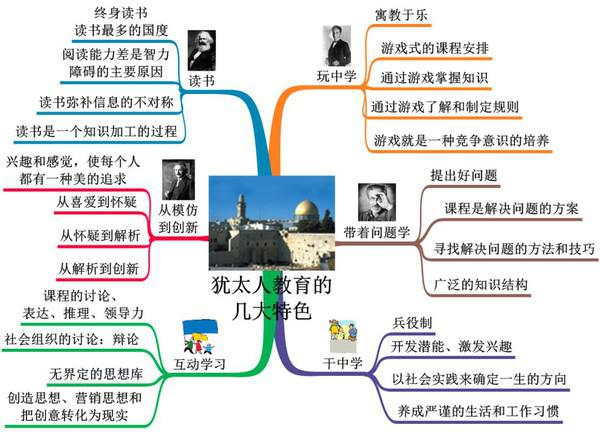

世界上犹太人的数量大约有一千六百万人。如果以世界人口六十亿来计算的话，他们只不过占了0.27%而已。然而犹太人当中却生成了很多的天才，像爱因斯坦、佛洛依德、伯格森、卡夫卡、海涅、萧邦、门德尔松、梅纽因、夏卡尔、卓别林等，不胜枚举。在一八九二年设立诺贝尔奖以来，这个奖可以说是由犹太人所独占，因为有32%的得奖人是犹太人，其比例是其他民族的100倍。为什么犹太人有这么多天才呢？答案很简单，因为犹太人的幼儿教育进行得非常好。让我们来看看犹太人的11个早教方法。

1、丰富的文化底蕴。
犹太人在长期的民族灾难中,背井离乡,流散于世界各地。他们顽强地保持着自己的文化,同时也吸引了所在国的文化精华。
犹太民族杰出的科学创造力,源于这个民族特有的开放式社会文化生态。他们喜欢古典音乐,所以有非常深厚的人文素养。像爱因斯坦、海涅、萧邦、门德尔松,美国的原子弹之父奥本海默、心理学家弗洛姆等,都是在这种复合型文化生态下破土而出的科学人才。
2、执著的教育追求。
国外一位作家写道:犹太人家庭在学问方面应受到高度评价,在这方面非犹太人的家庭相形见绌。这个因素,构成了其他一切差异的基础。爱因斯坦的成就,也与他在童年时代受到良好教育有关。这得益于他母亲的音乐熏陶，得益于叔父的数字启蒙,得益于父亲在他做出了蹩脚的小板凳后仍加以鼓励的情感教育。联合国教科文组织1998年的一次调查表明,在以犹太人为主的以色列,14岁以上的以色列人平均每月读一本书,全国 450万人,就有l00万人办有图书证。
3、理性的思维方式。
诺贝尔奖获得者、美籍犹太人赫伯特.布郎说:我的祖父常问我,为什么今天与其他日子不同呢?他总是让我自己提出问题,自己找出理由,然后让我自己知道为什么。我的整个童年时代,父母都鼓励我提出疑问,从不教育我依靠信仰去接受一件事物,而是一切都求之于理。我以为,这一点是犹太人的教育比其他人略胜一筹的地方。几乎每个犹太家庭的孩子都要回答这一个问题:假如有一天你的房子被烧毁,你将带什么东西逃跑呢?要是孩子回答是钱或钻石,母亲将进一步问:有一种没有形状、没有颜色、没有气味的宝贝,你知道是什么呢?要是孩子回答不出来,母亲就会说:孩子,你要带走的不是钱,也不是钻石,而是智慧。因为智慧是任何人都抢不走的,你只要活着,智慧就永远跟着你。犹太人一心追求知识,并以不同寻常的方式运用知识来谋生的特点代代相传。
4、永恒的探求心境。
犹太家庭不但重视知识,而且重视才能。他们把仅有知识而没有才能的人喻为 "背着很多书本的驴子"。他们崇尚创新,认为没有创新的学习只是一种模仿,学习应该以思考为基础,要敢于怀疑,随时发问。
怀疑是开启智慧大门的钥匙,知道越多,就越会发生怀疑,而问题也就随之增加。所以,许多犹末人家庭里碰到放学的孩予,第一句话就是:你又提问题了吗？有人称犹太民族是一个企图揭示自然和人类秘密的哲学家民族。喜欢思考宏观的、深层次的问题,喜欢抽象,喜欢逻辑,铸成了犹太人家庭教育的核心。
5、感受学习像蜂蜜一样甜美。
学习真的很没有意思吗?在以色列教给孩子们的是学习是有趣的,所以孩子们把学校当成比什么地方都有趣而开心的地方,刚入小学的第一天让孩子们认识(学习的甜美)。教师在新生入校时,在一块干净的圣经板用蜂蜜写字,老师带领孩子认这些字后会让孩子们把这些字舔吃掉,而后还会给孩子们一些糖果。孩子本来不知道学习是个什么东西,学校是个什么所在,而通过老师的行为,让孩子在第一步感受到原来学习是这么好的事,是这么有意思的事,从心理真正感受到学习象蜂蜜一样甜。那么他们就不会对学习产生恐惧了。
6、教授动脑的习惯。
仔细观察犹太人的教育方式不难发现犹太人并非天生聪明,而是努力在开发孩子的智力,使孩子们更加聪明。他们在学校或家庭形成一个让孩子动脑的氛围。教育孩子动脑,并不意味着让孩子看各种各样的书和解各种各样的题,而是根据仔细观察孩子所关心的问题和兴趣、特长及潜在能力，并为开发这些潜在的能力作出相对应的指导。同时,有意识的引导孩子在优美古典音乐环境里,展开各种联想,让孩子尽可能多的了解并体验更多的事物和现象,培养孩子开放式的思维方式。
7、不是给一条鱼，而是教怎么钓鱼。
犹太人不以教孩子学问作为目的,他们认为学习学问、并教孩子把学问变为自己的过程才是教育。所以他们选择的是找出原理、培养应用能力的教育模式。
8、不断进行的对话。
犹太人教育的核心是对话法,以色列的孩子非常吵闹,而且话多。如果以我国的观点看,孩子如果接大人话尾,是没有教养、没有礼貌的。但是犹太人并不这样认为,他们没把孩子作为教育的对象,而是和大人同等对待,和大人一起讨论的对话式的教育方法。此种教育方式就需要父母和老师要有相当的耐心和忍耐力。例如：以色列的孩子闹着要玩具,他们的父母可能会用好几个小时的时间向孩子说明为什么不能买的道理,当然父母也会听取孩子的想法。所以,在以色列随处可见父母和孩子争论的场面。在学校上课也是如此。在以色列教师讲课,孩子在那里静静地听老师讲课的学习方式是无法想象的。老师的话音未落,孩子们便会争先恐后的提问、讨论。而老师成了旁听者,等孩子讨论结束后收集并整理每个意见后确定结论。如在讨论中孩子各执主张争吵起来的话,教师会给孩子们各自辩论的机会,之后给予指出错误。这过程不是判决过程,而是让孩子自我检讨和以多种方法解决问题的思考过程。就这样孩子和教师围坐在一起讨论的样子就象小型国会的情景。这就是以色列教育的核心方法――对话法。
9、游戏和学习同步寓教于乐。
以色列的孩子不管去哪里都会三五成群,孩子们更喜欢多人一起玩耍。游戏是社会的缩小版,孩子在游戏的过程中,学到遵守规则的方法,寻找解决问题的方法,齐心协力获胜的方法等。
10、用反省代替体罚。
犹太人父母从不打孩子。我们的观点上讲,即使是体罚的情况下,妈妈也不高声,只是和孩子对话,看着为自己的立场考虑的妈妈,丝毫没有冤屈,而是通过对话过程中真心领悟到自己的过错,为了在体罚的情况下不高声责骂,需要父母有足够的人情味和忍耐性。
11、每晚给孩子讲故事书。
犹太人父母总是为床上的孩子讲故事书。给要入睡的孩子念书听,孩子听着听着就会入睡。在孩子的枕头边讲故事,可提高孩子的语言能力;给学话的孩子念书可提高孩子的词汇能力。通过爸爸妈妈给孩子讲故事,可以培养孩子的丰富的情感、想象力和对父母的爱及信赖感。
总结：人没有高低贵贱之分，人的智商也没有先天的优劣。犹太人崇尚“天才教育”，正是这种教育方式，让犹太人占据了全球70%的财富。